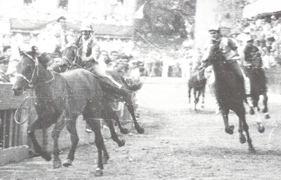

|
|
 |
16 agosto 1958
ISTRICE
|
L'ordine è quello di entrata fra i canapi e il grassetto indica la vincitrice
In questo colore le contrade estratte a sorte
Cliccando sui nomi dei cavalli, su quelli dei fantini e sulle immagini, si apriranno le relative pagine
* Fantino esordiente
MOSSIERE: Paolo Casilli 


Priore Onorario: Conte Guido Chigi Saracini
Priore: Alfredo Benincore
Vicario: Mario Bilenchi
Pro vicario: Mario Lari
Capitano: Renato Buccianti
Tenenti: Italo Fedolfi, Barone Fabio Sergardi, Aldo Martelli
Barbaresco: Ezio Papi
La contrada non vinceva dal 16 agosto 1956
Unico Palio vinto da questo fantino


|
Questa volta i cavalli più forti ci sono tutti. Il Bruco con Belfiore si affida a Rondone dopo aver provato Ciancone che va nella Pantera per montare Tanaquilla, la Lupa conferma Giove su Archetta, Vittorino, al rientro dalla squalifica, viene lasciato libero dal Nicchio e ritrova Gaudenzia nel Drago. Sulla sorpresa di luglio Uberta, l'Istrice da fiducia a Biba sin dalla prima prova.
Dalla mossa esce nettamente primo l'Istrice, seguito dalla Giraffa, in ritardo il favorito Bruco con Rondone incapace di sfruttare il primo posto al canape. Il primo giro è molto linare, girano nell'ordine Istrice, Giraffa, Drago, Lupa, Bruco e Pantera, le altre sono già staccate.
L'Istrice sembra in grado di controllare agevolmente la corsa, la Giraffa è sempre seconda mentre la Lupa ha passato il Drago dove la vecchia Gaudenzia perde posizioni. Al terzo Casato però Biba ripete lo stesso errore di luglio, allarga troppo e batte nei palchi cadendo rovinosamente.
Uberta si ferma per un attimo e ricomincia a correre solo mentre sopraggiungono i suoi inseguitori, la Pantera e la Giraffa che non hanno più dietro la Lupa che è caduta al Casato.
L'arrivo è mozzafiato, Uberta riesce a mantenere un minimo di vantaggio su Ciancone che tenta di passare all'interno senza poter impedire il successo dello scosso dell'Istrice.
Nel dopo-Palio botte per Rondone da parte dei brucaioli inferociti per una prestazione molto deludente del fantino di Seggiano.
(Da "Daccelo!" di Roberto Filiani)
|


|
|
|